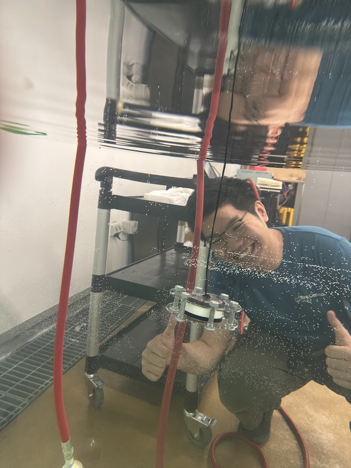
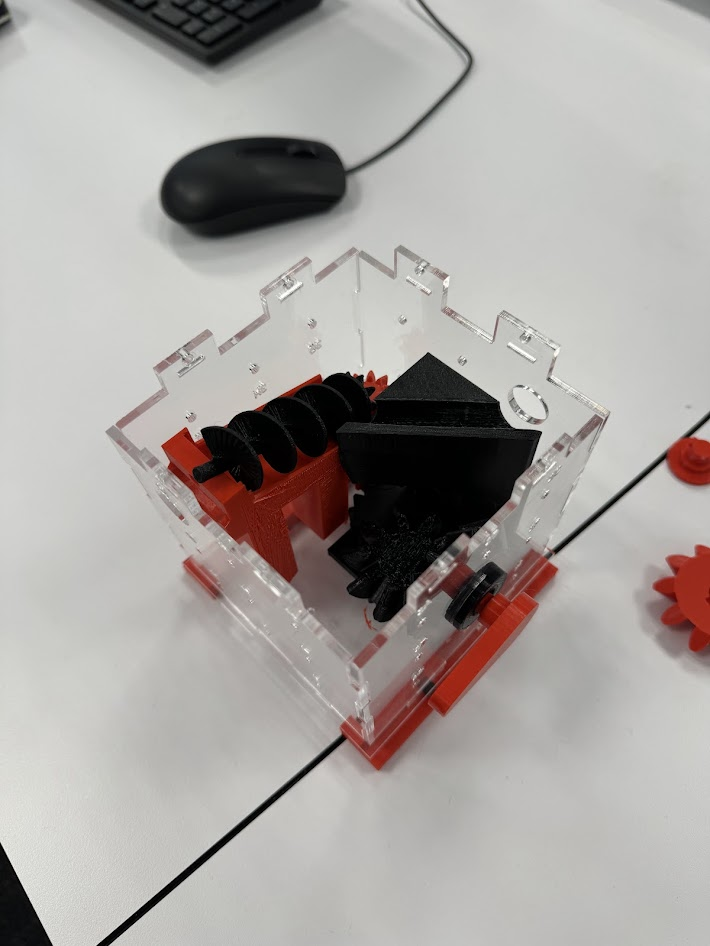
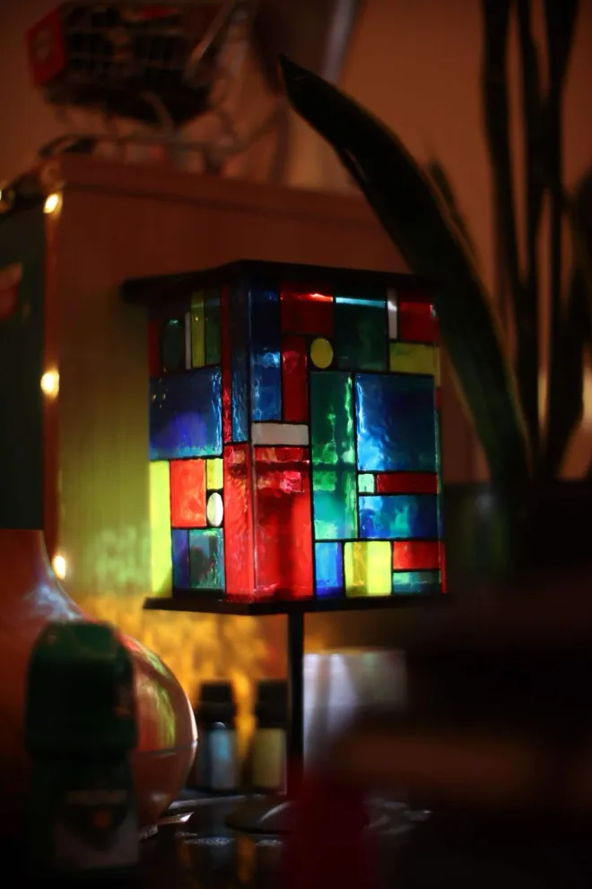
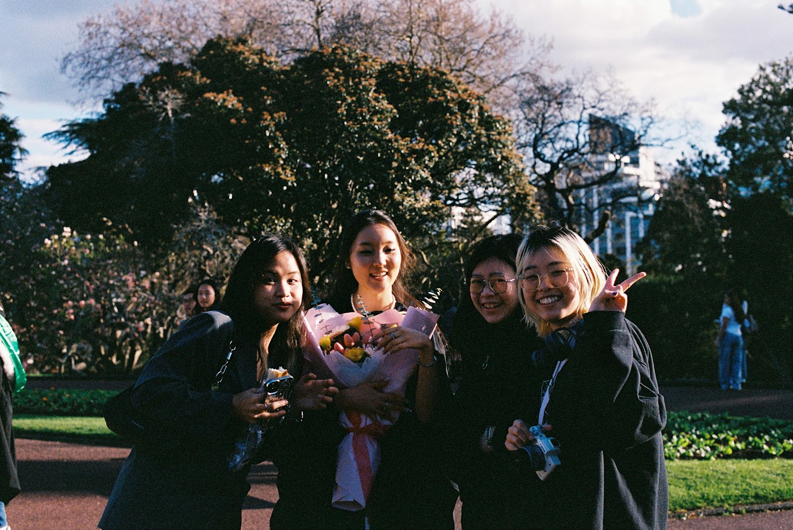

Underwater Transducer
Designed and built a high-efficiency underwater transducer, optimised for acoustic performance and minimal energy loss in submerged conditions.

SLS Multitool Keychain
A compact, non-movable multitool keychain produced via selective laser sintering in aluminium. Designed for everyday carry with multiple integrated functions.

Structural Bracket
CAD-designed bracket with FEA optimisation in Ansys. Engineered to withstand 3 kN upward and 4 kN downward loading while minimising material use.

Ball Transport Box
3D printed mechanism designed to autonomously move a ball from one end of an enclosure to the other, exploring passive mechanical motion.

Keyboard Enhancements
Hotswap modded a keyboard by hand-soldering Mill-Max sockets, allowing switches to be swapped without desoldering. Improved feel and repairability.

Mouse Repairs & Enhancements
Repaired and upgraded mice by replacing worn microswitches and scroll wheel encoders, restoring click feel and extending hardware life.

35mm Film Scanning Setup
Built a dedicated film scanning rig for 35mm negatives, balancing colour accuracy, resolution, and workflow speed for analogue-to-digital archiving.

Camera Repair & CLAs
Serviced and cleaned several film cameras through complete lens and aperture overhauls (CLAs), restoring accurate shutter speeds and clear optics.

Glass Pane Lamp Stand
Designed and 3D printed a custom stand to hold four laminated glass panes as a lamp for a friend. Modelled around the exact pane dimensions for a secure fit.

Photography Events
Shot a range of events on both film and digital, covering portraits, candid moments, and environments with a focus on natural light and composition.